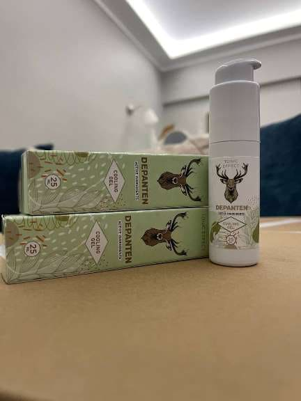

„Българските методи за терапия на ставите предизвикват само недоумение“ — известен немски специалист по ревматология даде откровено интервю за българско издание
Доктор Карл Киршмайер- ръководител на Центъра по ревматология в Берлин Ева
Майр-Щил към световноизвестната
клиника "Шарите":
Има само една причина за появата на ставни заболявания, но българските специалисти напълно я игнорират.
Миналата година д-р Карл Киршмайер е посетил България, за да проучи опита на своите
български колеги. Това, което той е видял в България, просто е необяснимо. В нашата страна,
по думите на г-н Киршмайер, ревматологията е останала в средата на миналия век.
След скандалните си изказвания в Германия, д-р Карл Киршмайер се съгласи да даде интервю за
едно българско издание. Какво не хареса известният специалист в българските методи на терапия?
И защо той
твърди, че БЪЛГАРИТЕ с болни стави никога няма да оздравеят?
– Говорейки пред немските журналисти, Вие сте казали, че видяното в България
Ви е
шокирало. Можете ли да коментирате това?
– Искам веднага да отбележа, че се отнасям с уважение към България, към българската култура
и българските граждани. Но състоянието, в което се намира вашите методи н терапия, наистина
шокира
европейските специалилсти. Терапията ви изостава минимум с 20, а може би, и с 30 години. Поне
по
отношение на възстановяване на ставните заболявания и опорно-двигателния апарат. Може да се
каже,
че в България няма такава наука като ревматология.
Вижте, с какво предлагат да се възстановяват ставите българските специалисти: Пироксикам,
Долгит,
Волтарен\Фастум гел, Диклофенак, Профлексон, Нурофен и други подобни препарати.
Но тези препарати не въстановяват ставите и хрущялите, а само премахват симптомите на
заболяването: болка, възпаление, подуване. Сега си представете, какво се случва във вашия
организъм, когато човек си взима таблетка, маже се с обезболяващ мехлем или си прави
инжекция, болката изчезва. Но веднага щом препаратът престане да действа, болката веднага се
връща.
Всъщност болката е важен сигнал, който сочи, че в ставата протича патологичен процес. Когато
болката просто се потиска, засегнатите стави се увреждат още повече. Разрушителният процес
се ускорява 3-5 пъти и в крайна сметка води до необратими промени, чак до пълно обездвижване
и инвалидност.
Този начин за борба с болката в ставите не се прилага в Европа повече от 20 години.
Болкоуспокояващите средства се използват само в краен случай, много прецизно и внимателно. В
Германия те се продават само с рецепта и под строг контрол.
Така наречените „хондропротектори“ са изцяло забранени, смятат се за абсолютно измамни и
безполезни средства.
Вашите специалисти и фармацевти просто осакатяват хората! Ясно е, че постоянните продажби на
скъпите препарати за облекчаване на симптомите са много по-изгодни от възстановяването на
разрушаващата се става и пълното възстановяване на заболяването, но не бива така!
– Какво ще кажете за възстановяването на ставите в Германия?
– Всички немски специалисти, от ревматолозите до обикновените терапевти и фелдшери, отдавна са
разбрали, че трябва да се отстраняват не последиците на заболяването, а неговите причини.
Това е ключът към пълното, бързо и безопасно оздравяване. Каква е основната причина за
увреждането на ставите? Това е натрупването на соли поради нарушения в кръвообращението
и циркулацията на синовиалната течност.
Уратите са соли на пикочната киселина, причината за появата на подаграта.
Остеофитите представляват калцинирани соли, които причиняват останалите 97 процента от
заболяванията на ставите и гръбначния стълб: всички видове артрит, артроза, остеохондроза,
остеопороза, ревматизъм, бурсит и дори хигрома. Всички тези заболявания имат една и съща
причина – натрупвания на остеофитите.
Отлагайки се върху повърхностите на ставата, солта като шкурка изтънява околните тъкани –
костите и хрущялите. При разрастването си, кристалите на солите започват да увреждат
мускулната тъкан, сухожилията, кръвоносните съдове и капилярите. Това води до възпаление,
инфекция, подуване и силни болки.
В напредналите случаи, големите натрупвания на соли могат лесно да отчупят парче кост
при рязко движение, което може да доведе до пълна неработоспособност и трайно обездвижване
на ставата.
Съществува много опасно мнение, че калцият е полезен за ставите. Да, калцият е полезен, но
само за ЗДРАВИТЕ стави. Когато ставите болят или щракат, това означава, че в тях вече
се е образувал слой остеофити, а калцият укрепва не само костите, но и солите-остеофити,
подсилвайки и ускорявайки растежа им.
Ето защо германските ревматолози преди всичко възстановяват кръвообращението в засегнатата
става, за да се изхвърлят солите, натрупани с години. Това възстановява
нормалната циркулация на синовиалната течност и стартира процеса на регенерация на ставните
тъкани.
Всъщност, ставите на човека имат способност за регенерация, те могат да се възстановяват
сами, като опашката на гущер. Трябва само малко да им помогнем – да ги освободим от
натрупалите се по тях соли и процесът ще тръгне самостоятелно.
Още през 90-те години на миналия век швейцарските учени са установили, че екстрактът от
Арнника е
способен да прочисти ставите от солните отлагания. Освен това веществото притежава
способността да премахва възпаленията в ставите и да намалява болката.
Това вещество може да прониква в молекулите на солите и да ги разкъсва отвътре. В
резултат на това повърхностите на ставите се изчистват, кръвообращението и циркулацията на
синовиалната течност се възстановяват. Повторното натрупване на соли ще отнеме няколко
десетилетия. През цялото това време НЕ Е НЕОБХОДИМА ПОСТОЯННАТА УПОТРЕБА на препарати за
облекчаване на болката и възпаленията. Вече няма да се страхувате, че един ден ставата ще се
„блокира“ завинаги, ще ви обездвижи и ще ви се наложи протезиране. Хората стават абсолютно
здрави за десетки години напред.
Когато видях българската статистика за методите на терапия, косата ми настръхна. Знаете ли,
каква е
най-честата причина за получаване на инвалидност в България? Това не е нито рак, нито СПИН,
нито диабет, а остеоартроза! Баналната остеоартроза, която в Германия се премхва за 2-3
седмици с един достъпен препарат, в България води до инвалидност!
Днес в Германия ставните заболявания не се смятат за опасни патологии, разбира се, с
изключение на тежките травматични увреждания: фрактури, счупвания, разкъсвания и др. Болката
и възпалението в ставите само показват, че те за „замърсени“ със соли и трябва да бъдат
почистени. След 2-3-седмична „прочистваща“ терапия, ставите се връщат към нормалното си
състояние и ще можете да забравите за проблема си за следващото десетилетие.
Заболяванията на ставите, които в България се опитват да третират поотделно, в Европа
отдавна са обединени в една патология „Articulatio de sales“ (натрупвания на соли върху
ставите). Това понятие включва:
- Подагра
- Артрит
- Артроза
- Остеохондроза
- Ревматизъм
- Остеопороза
- Бурсит
- Синовит
- Хигрома
Това е много кратък списък, но останалите заболявания са само разновидности на тези девет
основни патологии. Например, коксартрозата е подвид на артрозата и т.н.
И този дълъг списък от заболяванията може много лесно да се възстанови с просто почистване на
ставите. Това е абсолютно безопасно, дори не изисква професионална помощ и се извършва в
домашни условия.
– Как се „почистват“ ставите в Германия?
– Днес има специални препарати, които са предназначени за почистване на ставите от
натрупаните соли. Те съдържат ектракт от Арника, който споменавах преди малко. Например, гелът
е много добро средство. Освен ексстракта от Арника, той
съдържа
натурални екстракти от ценни растения, които допълват действието му.
Друго важно предимство на е, че той съдържа комплекс
артро-системни витамини, макро-и микроелементи, предназначени да подобрят функционирането на
ставните тъкани. С други думи, гелът оказва цялостен ефект върху костната и
хрущялната тъкан, синовиалната течност, мускулните влакна, тъканите на ставните връзки и
сухожилията. Това е пълен спектър от възможното комплексно действие.
– За съжаление, не. Българските специалисти предпочитат да „тъпчат“ хората с тонове
обезболяващи
и хондропротектори, вместо да им помагат както трябва.
Уверявам ви, че българските специалисти по ревматология, или поне тези от тях, които се
интересуват от
прогресивните методи на терапия, знаят за и неговите
възстановителни свойства. Но те не рискуват да назначават препарата, който не е в списъка на
Министерството на здравеопазването.
Доколкото знам, производителят на е имал намерение да
излезе на българския пазар. Но не са му позволили да направи това, като са измислили стотици
спънки (бюрокрацията в България не може да бъде изкоренена). Ясно е, че ако това средство се
появи в аптеките, тогава българската аптечна мафия ще понесе огромни загуби. Защото в днешно
време фармацевтиката е бизнес! Дори и в Европа. Но в развитите европейски страни бизнесът се
контролира от държавата.
– Какво бихте препоръчали на хората със ставни заболявания, живеещи в
България?
– Обикновените хора, особено тези на възраст над 50 години, страдат най-много от
изостаналостта на българската медицина. Вината не е тяхна – просто системата ви на
здравеопазването е организирана по този начин.

За щастие, има решение. Нашето издание се договори с Университета по възстановителна терапия и
фармация в
София и с Българските пощи за възможността средството да се разпространява на преференциална
цена сред всички български граждани, които имат проблеми със ставите. Служителите на
университета са създали специален разпределителен център и по този начин бе осигурена
необходимата партида от препарата. Така че сега всеки българин може да си поръча
на достъпна цена от
.
- Попълнете официалния формуляр за поръчка за получаване на , който ще намерите в края на статията;
- Изчакайте обаждането от консултант, който ще отговори на всички интересуващи ви въпроси. Вие трябва да му съобщите адресата за доставка;
- Поръчката ще бъде доставена в рамките на 3-5 дни.
Разпространяваме от 2 месеца. Няколко хиляди
български граждани вече са се възползвали от тази възможност. Помолихме всички хора, които
са получили , да оценят, до каква степен им е помогнал
препаратът по скалата от 1 до 10. Към момента в анкетирането са участвали над 3000 души, а
средната оценка е 9,97 от 10.
Както виждате, е помогнал на хиляди българи да си върнат
подвижността и да се избавят от болката и вие можете да бъдете сред тях.
– Колко време ще продължи разпространението на препарата при преференциални
условия?
– Промоцията ще бъде валидна до изчерпване на отпуснатата партида. Но искам да ви
предупредя, че са останали много малко опаковки на цена от
. Поръчките
нарастват като лавина. Работи рекламата „от уста на уста“, хората споделят помежду си
информацията, съветват приятели, поръчват за близките си. Дори не очаквахме, че информацията
за ще се разпространява толкова бързо.
Докато препаратът не е свършил, препоръчвам на всички лица на възраст над 45 години да
кандидатстват за получаването му в рамките на преференциалната програма за
.
